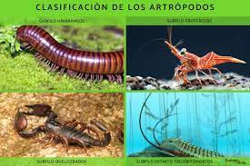
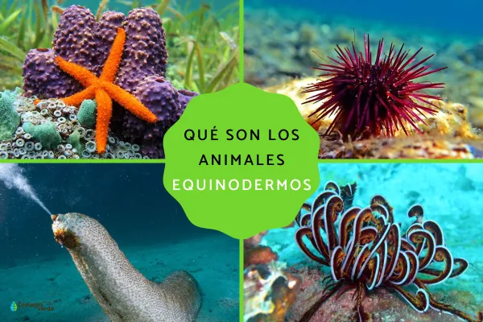
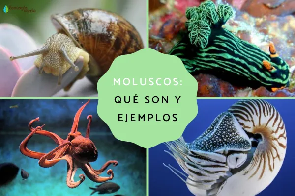
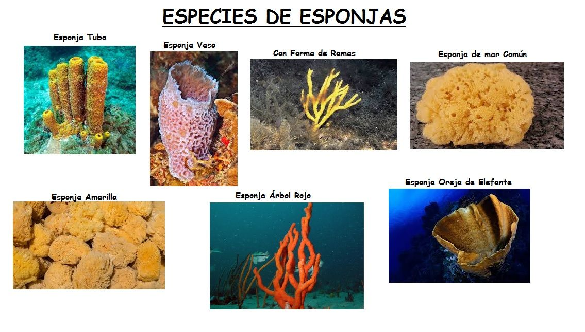
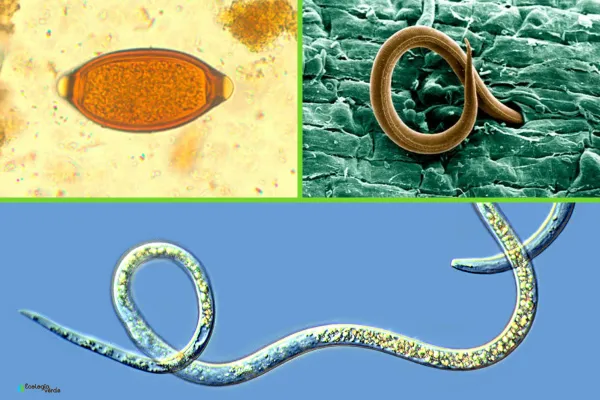

Exoesqueleto de quitina y patas articuladas
Simetria pentarradiada, esqueleto externo de piezas calcareas
Boca con radula, pie muscular y manto alrededor de la concha
Parazoos; sin simetria definida; cuerpo perforado por poros inhalantes
Gusanos pseudocelomados de seccion circular con cuticula quitinosa
